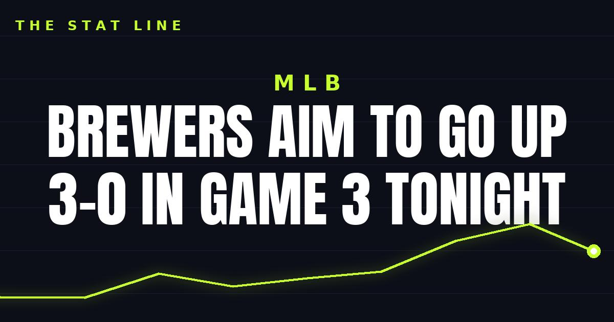

Brewers Aim to Go Up 3-0 in Game 3 Tonight
The Brewers take a 2-0 World Series lead into Game 3 tonight at Tropicana Field, with Robert Gasser starting for Milwaukee against Freddy Peralta, Tampa Bay's former Brewers ace.

Disclosure: this post contains affiliate links. I earn a commission on qualifying purchases.
The Brewers take a 2-0 lead into Game 3 tonight at 8pm ET at Tropicana Field in St. Petersburg. One more win, and Milwaukee will be a single victory away from a championship.
The pitching matchup
Robert Gasser starts for Milwaukee against Freddy Peralta, Tampa Bay's former Brewers ace. The Peralta angle writes itself: the Rays turn to a pitcher who knows the Brewers organization inside out, with the season on the line for Tampa Bay.
Series: Brewers lead 2-0
Game 3: Tonight, 8pm ET
Venue: Tropicana Field, St. Petersburg
Brewers starter: Robert Gasser
Rays starter: Freddy Peralta
What to watch
The series shifts to St. Petersburg with Milwaukee holding all the momentum. A Brewers win tonight puts them up 3-0 — a lead no team wants to face. For the Rays, Game 3 is the stand: win at home behind Peralta, and the series gets a whole new shape.
Watch
Source: Freddy Peralta takes the mound for the Rays after the Brewers win World Series Games 1 & 2!🔥 (MLB). The video recaps how the Brewers won Games 1 and 2 and previews Peralta's Game 3 start as the Rays look to bounce back at home.
Gear up: Fanatics